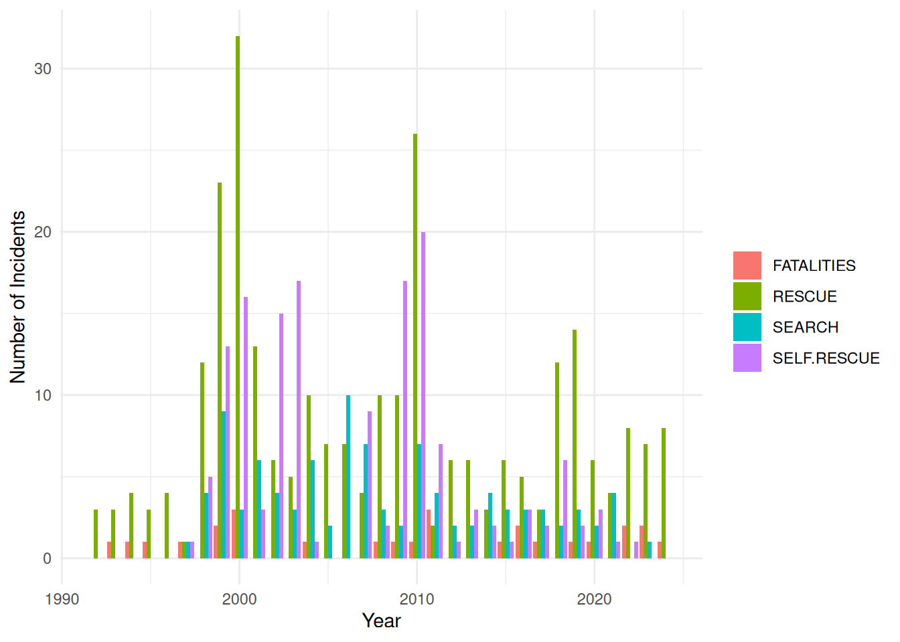
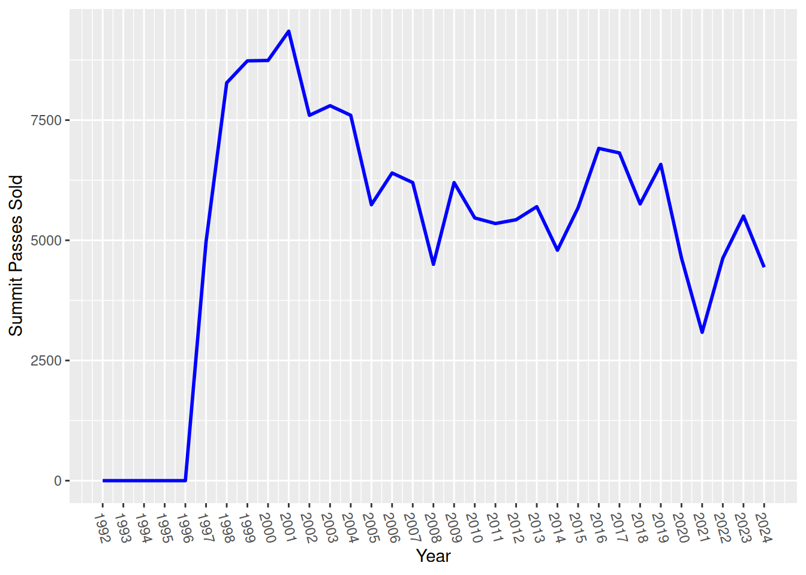
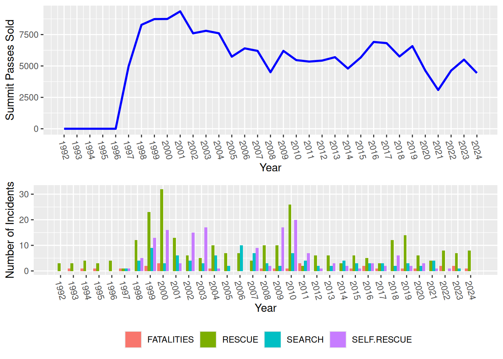

library(ggplot2)
library(tidyverse)
library(gridExtra)
# Read in the CSV file
pass_data <- read.csv("~/DATA/data/mount-shasta-summit-pass-data.csv")Mount Shasta Summit Pass Data
data
meta-data
research
journalism
data journalism
avalanche
ski touring
back country skiing
search and rescue
mount shasta
–Visualizing Search and Rescue Data
I am collaborating with the Mount Shasta Avalanche Center to visualize data sets and build models to help them forecast avalanches in the area better. A small dataset that they have been collecting since 1992 is the number of Summit Passes sold along with the Search and Rescue (SAR) activities that the Rangers perform. This data is available in the Avalanche Center Annual Reports and SAR statistics.
See the other posts in the Avalanche Data series: Post 1, Post 2, Post 3 and Post 4.
Here are a few plots I made for the upcoming reports.
Load the libraries and in-file the data.
I always take a quick look at the data to make sure it infiled correctly.
head(pass_data) YEAR SUMMIT.PASSES.SOLD FATALITIES SEARCH RESCUE SELF.RESCUE Total
1 1992 0 0 0 3 0 0
2 1992 0 0 0 0 0 0
3 1993 0 1 0 3 0 0
4 1994 0 1 0 4 0 0
5 1995 0 1 0 3 0 0
6 1996 0 0 0 4 0 0summary(pass_data) YEAR SUMMIT.PASSES.SOLD FATALITIES SEARCH
Min. :1992 Min. : 0 Min. :0.0000 Min. : 0.000
1st Qu.:1999 1st Qu.:4532 1st Qu.:0.0000 1st Qu.: 1.000
Median :2008 Median :5592 Median :1.0000 Median : 3.000
Mean :2008 Mean :5084 Mean :0.8182 Mean : 2.941
3rd Qu.:2016 3rd Qu.:6758 3rd Qu.:1.0000 3rd Qu.: 4.000
Max. :2024 Max. :9349 Max. :3.0000 Max. :10.000
NA's :1
RESCUE SELF.RESCUE Total
Min. : 0.000 Min. : 0.000 Min. : 0.00
1st Qu.: 4.000 1st Qu.: 0.000 1st Qu.: 9.00
Median : 6.000 Median : 2.000 Median :11.50
Mean : 8.029 Mean : 4.441 Mean :15.62
3rd Qu.:10.000 3rd Qu.: 5.750 3rd Qu.:20.00
Max. :32.000 Max. :20.000 Max. :54.00
Transform the data into long format for easier plotting.
data_long <- pass_data %>%
pivot_longer(cols = c("FATALITIES", "SEARCH","RESCUE","SELF.RESCUE"),
names_to = "variable",
values_to = "value")Create the base plots for summit passes sold and the other Search and Rescue statistics collected.
summit_pass1 <- ggplot() +
geom_line(data = pass_data, aes(x = YEAR, y = SUMMIT.PASSES.SOLD), color = "blue", size = 1) +
scale_y_continuous(name = "Summit Passes Sold") +
theme_minimal() +
labs(x = "Year")
summit_pass1
SAR_1 <- ggplot() +
geom_bar(data = data_long, aes(x = YEAR, y = value, fill = variable), stat = "identity", position = position_dodge()) +
scale_y_continuous(name = "Number of Incidents") +
theme_minimal() +
labs( x = "Year", fill = "")
SAR_1
I like to default to a minimal theme to see how it looks and then add gridlines and color back to the plots. Minimal plots are great for people who are used to looking at plots, however the end readers of this report are mostly from the general public so I decided to add in each year along the x-axis. I want to stack the plots so I will also move the legend for the SAR data to the bottom.
summit_pass2 <- ggplot() +
geom_line(data = pass_data, aes(x = YEAR, y = SUMMIT.PASSES.SOLD), color = "blue", size = 1) +
scale_x_continuous(breaks = seq(1992, 2024, 1)) +
scale_y_continuous(name = "Summit Passes Sold") +
theme(axis.text.x = element_text(angle = -75, vjust = 0.5)) +
labs(x = "Year")
summit_pass2
SAR_2 <- ggplot() +
geom_bar(data = data_long, aes(x = YEAR, y = value, fill = variable), stat = "identity", position = position_dodge()) +
scale_x_continuous(breaks = seq(1992, 2024, 1)) +
scale_y_continuous(name = "Number of Incidents") +
theme(legend.position="bottom",
axis.text.x = element_text(angle = -75, vjust = 0.5)) +
labs( x = "Year", fill = "")
SAR_2Using the gridExtra package we can combine the plots we already generated.
combined_plot <- grid.arrange(summit_pass2, SAR_2)
combined_plotTableGrob (2 x 1) "arrange": 2 grobs
z cells name grob
1 1 (1-1,1-1) arrange gtable[layout]
2 2 (2-2,1-1) arrange gtable[layout]These plots are going to be published and printed so we want to make sure they are large enough and have at least a 300 dpi resolution.
ggsave(plot = summit_pass2, "~/DATA/images/summit-passes.png", width = 10, dpi = 300)
ggsave(plot = SAR_2, "~/DATA/images/sar-metrics.png", width = 10, dpi = 300)
ggsave(plot = combined_plot, "~/DATA/images/pass-sar-metrics.png", width = 10, height = 8, dpi = 300)There we have it. Some basic tidy-verse plots for inclusion in the Annual and SAR reports.
See the other posts in the Avalanche Data series: Post 1, Post 2, Post 3 and Post 4.